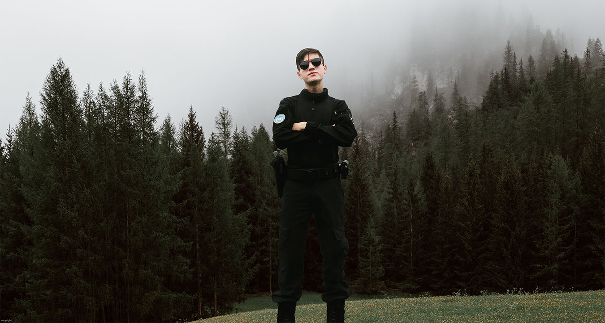

Dark Day
Atenção! Os acontecimentos foram reais, todavia, nomes de pessoas e de lugares poderão ser alterados para a preservação e sigilo de determinadas informações.
14 de Maio de 2022 ficaria marcado como um dia trágico na história da cidade de Nowhere, onde um massacre ocorreu. Como membro operacional do SUSP, tive minha primeira experiência intensa trabalhando com a GCM. O dia começou com um clima sombrio e silencioso, mas eu não poderia imaginar o que estaria por vir.
Eu fui escalado para patrulhar junto ao Inspetor Chefe Mr. Duck, um veterano da instituição, enquanto eu era apenas um recém-formado. O dia parecia tranquilo até que fomos convocados para um treinamento especial de armamento e tiro. Quando a noite chegou, estávamos prontos para uma missão de patrulhamento.
Foi uma noite longa e caótica, com várias denúncias de tentativas de homicídio chegando a cada 15 minutos. Foi meia-noite quando ocorreu o sexto crime consumado e estávamos próximos ao local. Quando chegamos, me deparei pela primeira vez com corpos no chão. Pessoas que estavam simplesmente no lugar errado, na hora errada, haviam se tornado vítimas de um plano para encobrir os verdadeiros motivos dos assassinatos em série.
Ao voltarmos para a base, sem sucesso na identificação dos criminosos, as imagens ainda estavam frescas em minha mente. De alguma forma, eu não me sentia mal, mas meu corpo ainda parecia estar no local do crime. Minha coordenação motora estava afetada e eu não conseguia me desconectar das cenas que havia visto.
Enquanto a chuva caía, todos foram liberados para descansar, mas eu fiquei ali, olhando para a chuva. Eu sempre gostei de chuva, mas desde aquele dia algo mudou. Eu não sei dizer exatamente o que foi, mas sei que nunca vou esquecer aquele dia.